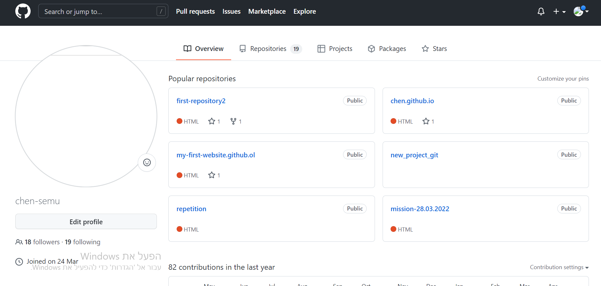

curriculum vitae
main profession: Full Stack Devloper
summery of myself
born: in spetember 6 1995 in the city of rehovot in israel
education:
amos de shalit high school
dgree- first dgree in chimistry and biolegy, sutdied in bar ilan
university
course- full stack devlopment, studied in tech career college
service: 3 years in the border police
profession: , Security and full stack devlopment
expiriense: 1 year Installing elevators, 3.5 years in security, junior
in F.S.D
military
I served for 3 years from 2014 to 2017 in the border police (also
called magav) as a combat soldiar
I was a combat medic through all of my servse and as a crew commander
in my last year
higher education
I started studing combind degree in biolegy and chimistry in the year
2019 and halted my dgree in the end of 2021
and started studing
full stack development (F.S.D) in the year 2022 for a year, after
finishing studing F.S.D I returned and finished my dgree in chimistry
and biolegy
projects
goldstar communitie website project.png)
ynet website project
.png)
more of my projects you can see in my personal account on github
